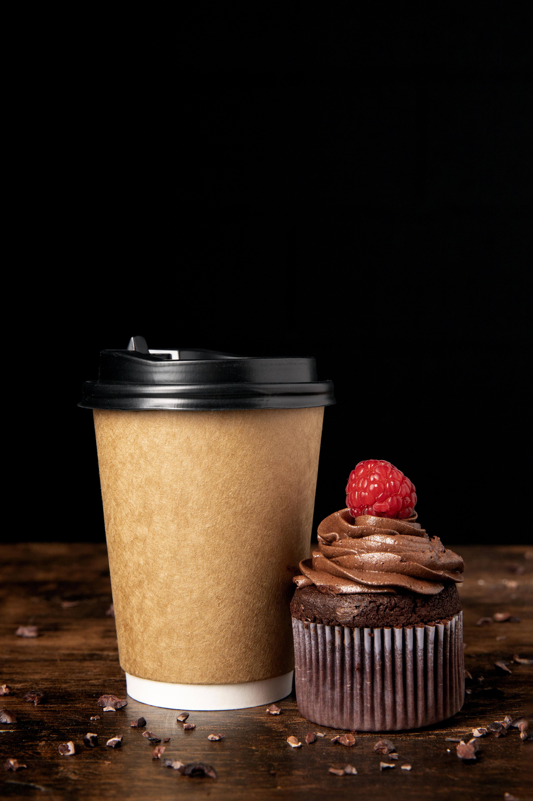
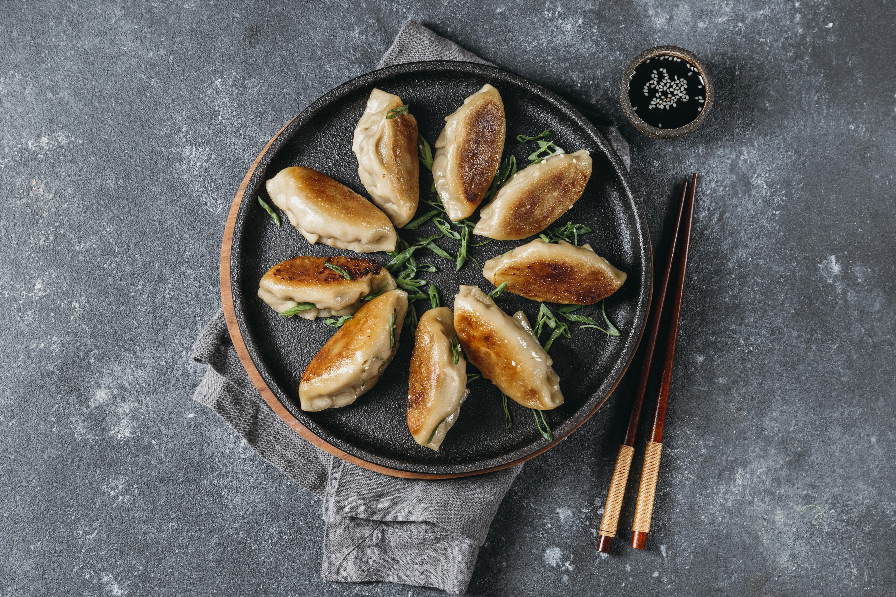
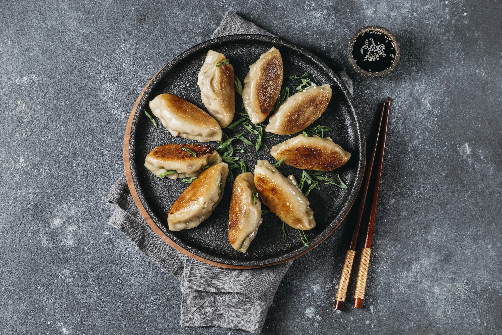

Are you a hungry UNCG student tired of cafeteria food? Eager in search of something new? Look no further! I have curated a list of the most exceptional dishes/drinks on campus and around that are sure to tantalize your taste buds. From fresh coffee to mouthwatering dumplings, this list has got you covered. So, put on your foodie hat and let's dive into the delightful world of flavors.
Located at 334 Tate St, specializing in specialty coffees and pastries. Open from 6:30 AM to 5 PM. With 100% Fair Trade and Organic coffee beans, they offer a ton of different signature lates, ciders, and other drinks, as well as a variety of breakfast options like bagels, muffins, and other pastries. They feature live music, and a Jazz jam every thursday night. They also host live jazz on saturday and sunday mornings and Irish music on Sunday afternoons.
Located at 123 Tate St, specializing in authentic Japanese dishes and is a full family owned restaurant. Open from 11 AM to 10 PM. Stepping inside of Don feels like stepping into a new country !
 


Located at Elliott University Center, UNCG, specializing in wings bone in and boneless. Open from 11 AM to 5 PM. A new addition to the EUC cafeteria which has quickly become a hotspot.